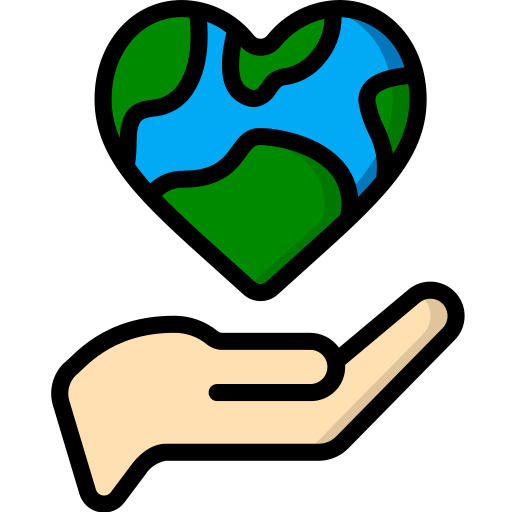

About
Chronios Vale was founded in 1987 with the goal of exploring how advanced
computational systems could improve decision making in an increasingly complex world.
Since then, we have worked alongside many clients, including governments, research institutions,
and global organisations to develop technologies that transform data into
meaningful foresight that can improve the world we live in into a better place for each
and every person.
Our Company
At Chronios Vale, our work is guided by a commitment to responsible innovation and
long term impact. We believe that technology should serve people, not replace them.
Every system we develop is designed to support human decision making and help
organisations navigate an uncertain future with clarity and confidence.
Ethics

Ethical responsibility is central to everything we do. Chronios Vale maintains
strict internal guidelines to ensure that our technologies are developed
and deployed responsibly. We work closely with independent oversight groups and
research partners to ensure that our systems prioritise long term societal benefit.
Innovation
Innovation has always been at the heart of Chronios Vale. Our research
teams continually explore new approaches to predictive modelling, machine
learning, and advanced computational analysis. By identifying patterns within
vast and complex data systems, we help organisations anticipate challenges before
they arise.
Our team
Eli Freeman
Chief Executive Officer
main guy blurb about him. Company position, when and how he began.
Alex Wheaton
Random high up company role
blurb about him. Company position, when and how he began.
Chelsea Johnson
Random high up company role
blurb about her. Company position, when and how she began.